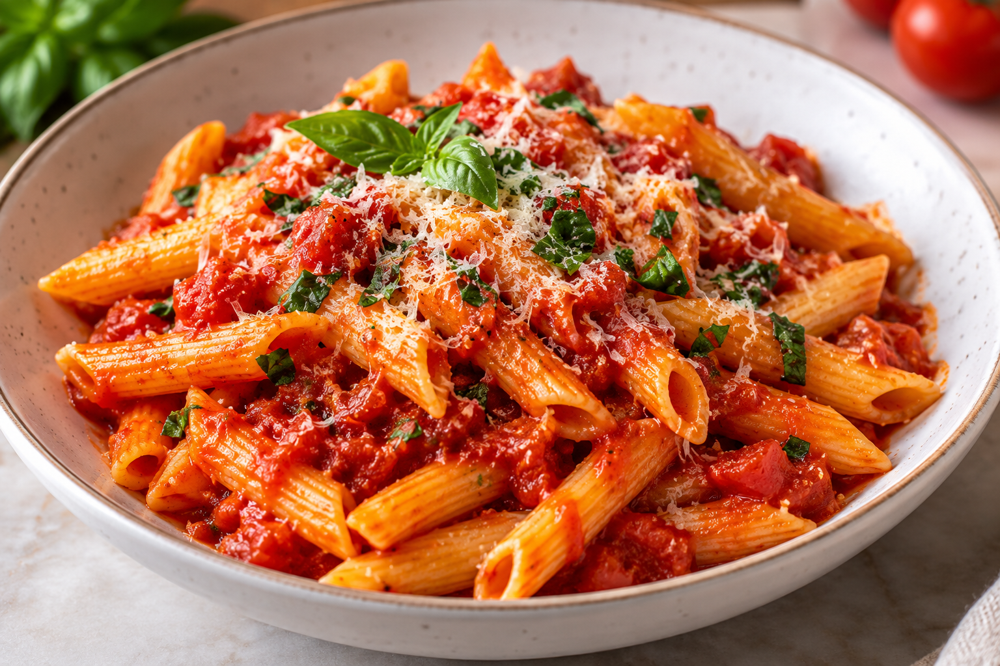

Pasta

The Perfect Lunch
Pasta is a traditional Italian dish that is simple and delicious.
This recipe combines tender pasta with a rich tomato sauce and
flavorful seasonings.
It is easy to prepare and makes a perfect meal
for lunch or dinner.
ingredients
- 2 cups penne pasta
- 1 cup tomato sauce
- 2 tablespoons olive oil
- 2 cloves garlic
- 1 teaspoon salt
- 1/2 teaspoon black pepper
- 1 teaspoon oregano
- 1/4 cup grated Parmesan cheese
- Fresh basil leaves
- 1/2 cup chopped tomatoes
Steps
- Bring a large pot of water to a boil.
- Add salt to the boiling water.
- Add the penne pasta and cook for 10–12 minutes until tender.
- Drain the pasta and set it aside.
- Heat the olive oil in a large skillet over medium heat.
- Add the chopped garlic and cook for 1–2 minutes until fragrant.
- Add the chopped tomatoes and cook for 3–4 minutes.
- Pour the tomato sauce into the skillet and stir well.
- Add salt, black pepper, and oregano to the sauce.
- Let the sauce simmer for 5–7 minutes.
- Add the cooked pasta to the skillet and mix until evenly coated with sauce.
- Sprinkle grated Parmesan cheese over the pasta.
- Garnish with fresh basil leaves.
- Serve the pasta hot and enjoy!